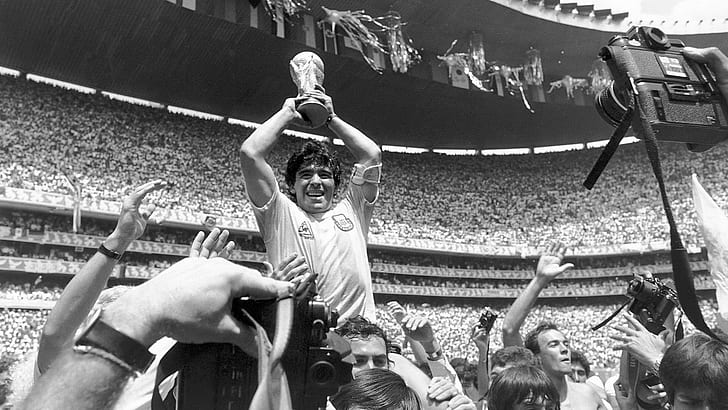

DIEGO ARMANDO MARADONA

El mejor jugador de toda la historia.
Diego Maradona es considerado de forma unánime como uno de los mejores jugadores de fútbol de todos los tiempos. La magia de su camiseta 10 perdura en la memoria de los argentinos, y también de los napolitanos, en una mezcla de veneración y agradecimiento eterno por la alegría brindada por el crack. En su galería de jugadas antológicas está el polémico gol «la mano de dios», además del gol más espectacular del siglo. Los excesos y controversias de su vida privada exacerban el lado más humano de una figura legendaria.